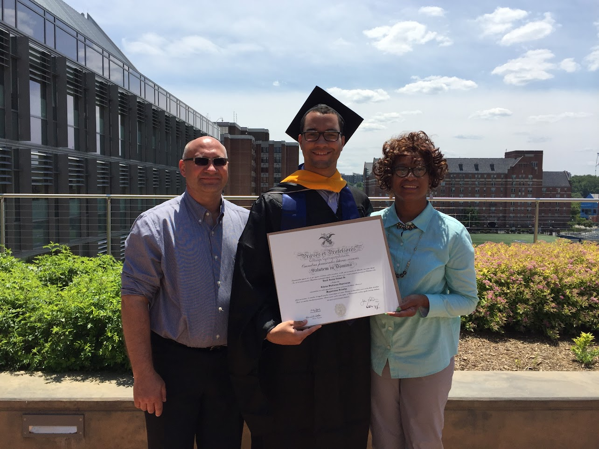
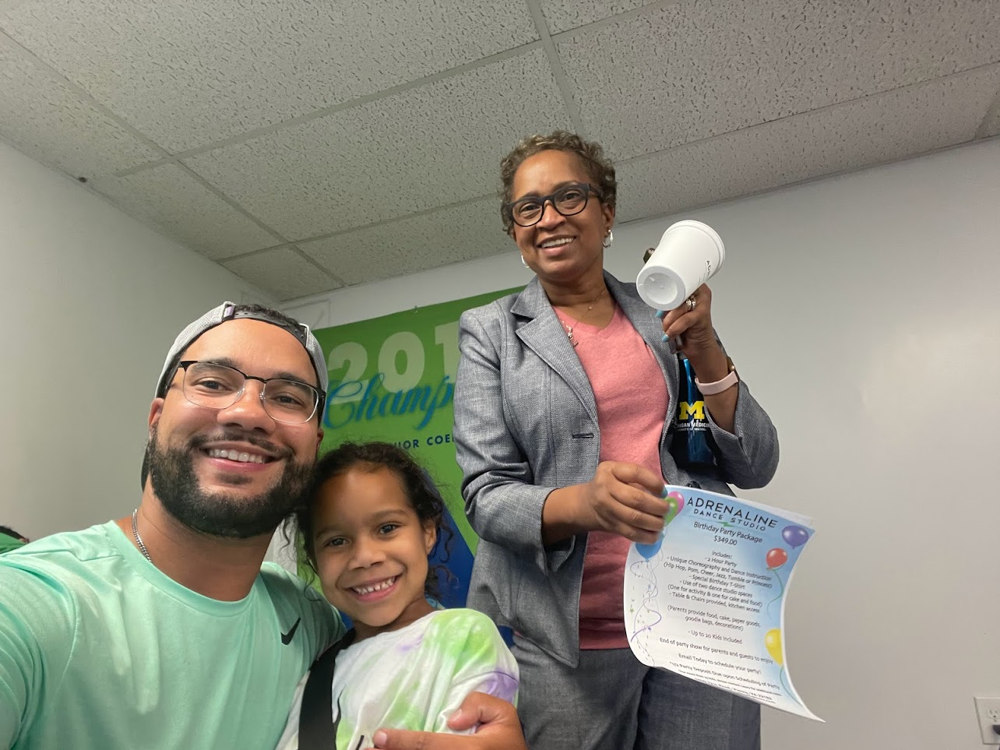
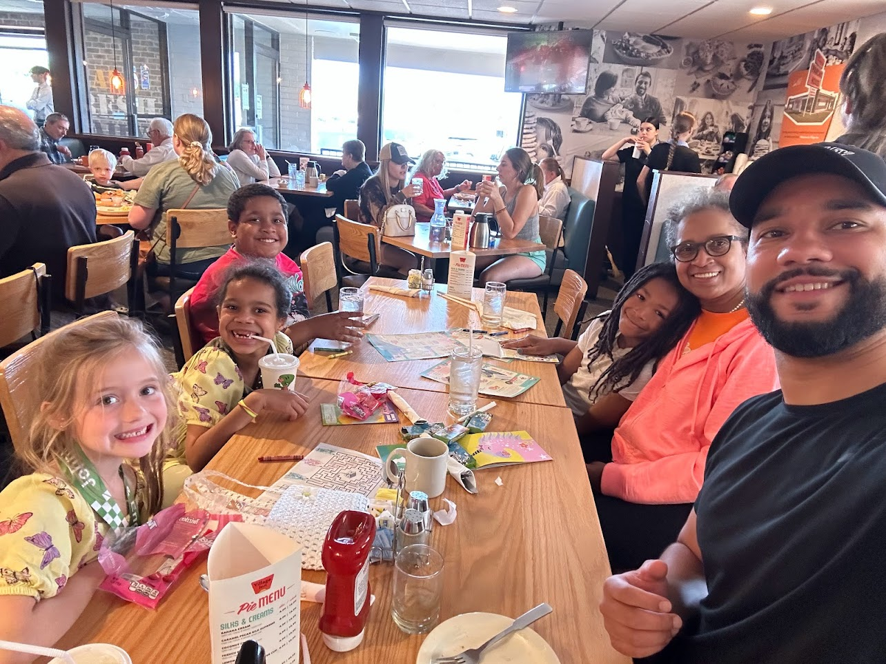
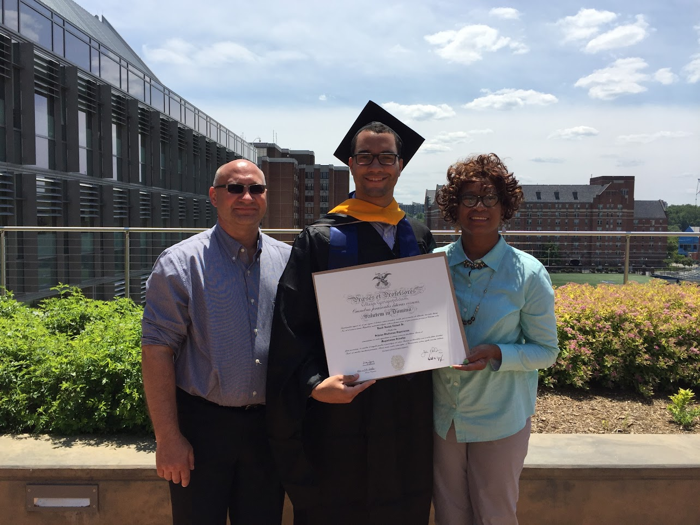
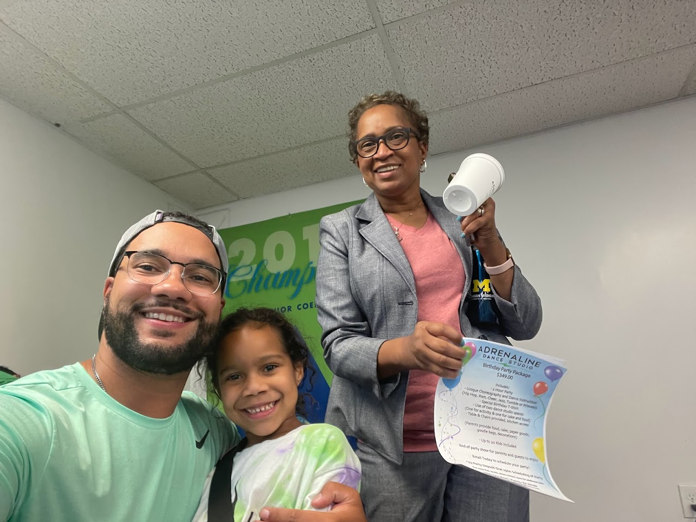
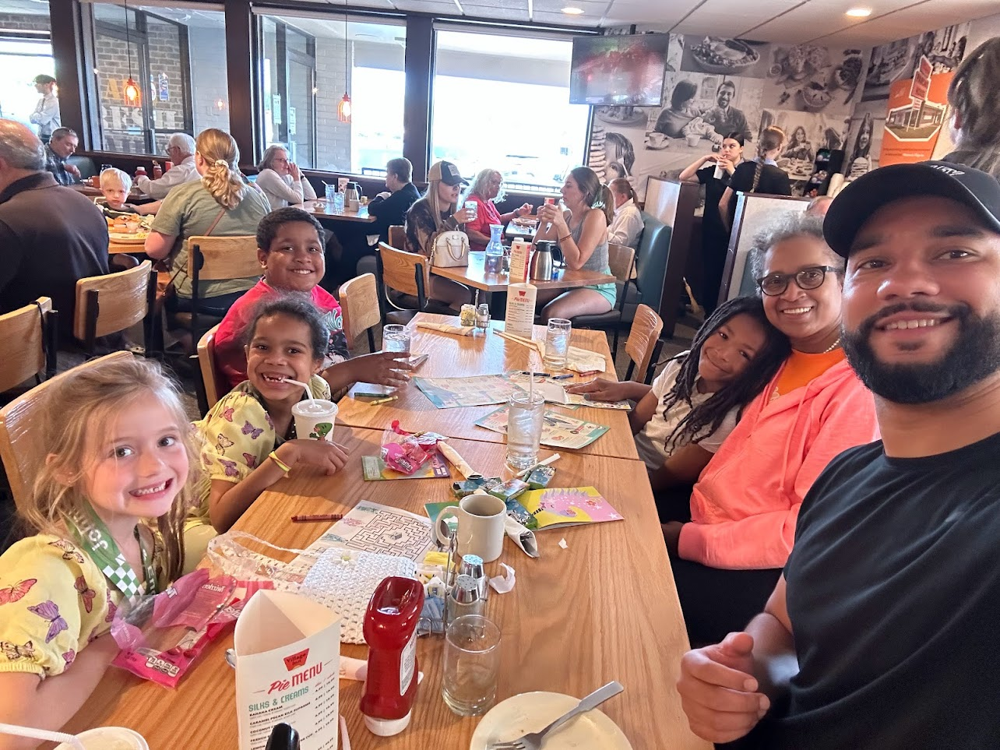

About Felicia
I’m a community advocate in the northern Kansas City area—and I’ve built my life around serving the people who live here.
For over 25 years I’ve served as a postmaster in Clay County. That role taught me what it means to show up, handle important documents with care, and earn the trust of neighbors and families. When you need a notary, you’re not just getting a stamp—you’re getting someone who understands how much these papers matter.
I’m a loving wife, married for over 35 years, and a mother to two boys and two girls, and a grandmother to four. Family is at the center of everything I do. I know how it feels to need things done right and on time, whether it’s a loan closing, a power of attorney, or paperwork for a loved one. I treat every client the way I’d want my own family treated.
Beyond the post office and notary work, I stay active in my community. I’m involved in my local church, volunteer at a tax advice program where I help young families sort through their taxes, and serve as a patient care advocate (PCA) at a local clinic—helping patients navigate recovery and feel supported when it matters most. Giving back isn’t something I do on the side; it’s who I am.
When you book with me, you’re meeting someone who has spent decades in Clay County, who cares about getting it right, and who will make sure you understand every document we sign. I meet you at a comfortable, neutral location—library, coffee shop, or your office—and I’m here to make the process clear and stress-free.
 





This site was built and is hosted with help from my son.